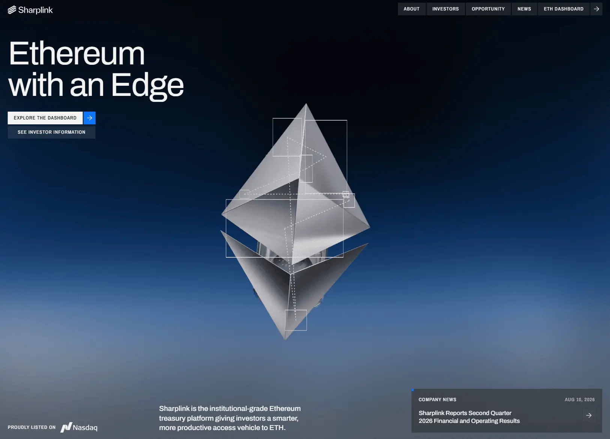

Сайт 015 · Корпоративный · Финансы и банки
SharpLink
27 место в чемпионате · 69.5 / 100
Screens/015.webp, доминирующий цвет занимает 38% кадра.Что это
Корпоративный сайт публичной компании SharpLink, Inc. (NASDAQ: SBET), которая держит казначейство в Ethereum. Первый экран построен вокруг крупной металлической фигуры на тёмно-синем градиенте — но это видеоролик в теге video, а не интерактивная графика: three.js в сборке присутствует, однако выключен флагом в конфигурации. Сайт сделан на Nuxt с серверным рендерингом и развёрнут на Vercel, контент приходит из headless-CMS Storyblok, анимации — на GSAP и Lenis, изображения отдаются в AVIF и WebP через оптимизатор Vercel.
Описание владельца коллекции: Солидный сайт биржевой компании, которая покупает и хранит Ethereum, повышая общую стоимость активов. В оформлении много мелких деталей, приятная качественная вёрстка и металлические 3D-иллюстрации.
Чем интересен
- «Металлические 3D-иллюстрации» на самом деле видео: герой — ролик в WebM, вторая сцена — пара WebM и MP4 с кодеком HEVC для Safari, а three.js в сборке есть, но отключён флагом.
- Страница рассчитана на JavaScript: герой-видео отдаётся без автозапуска, ключевые элементы приходят с нулевой прозрачностью, а на случай отключённого скрипта в разметке есть отдельный заголовок «This website requires JavaScript in order to work properly».
- Палитра собрана как дизайн-система: шесть базовых цветов, каждый развёрнут в шкалу прозрачности с шагом пять процентов, плюс токены сетки с переключением на 4 колонки для мобильных и 12 для десктопа.
- Мелкие детали оформления сделаны системно: рамки-«пины» по углам блоков через псевдоэлементы с переменной цвета, иконки — CSS-маски, а текст кнопок и заголовка продублирован в разметке для масочных анимаций.
- В карту сайта попала служебная страница /ai-testing: она отвечает 200, но без заголовка и с h1 «Ai testing» — похоже на забытую тестовую страницу.
- У тега html нет атрибута lang, микроразметки нет, а одна и та же картинка для соцсетей прописана на всех страницах; ключевые числа вроде holdings и staking rewards в серверной разметке отдаются заглушкой и подгружаются на клиенте.
Все 30 номинаций сайта
Итог: 69.5 / 100 по профилю «Сервис, банк, образование». Первых мест в критериях: 2 (единолично 0, разделено 2), призовых мест: 5. Строки отсортированы по месту в номинации, ссылка ведёт к номинации в чемпионате.
- Соответствие бренду и ЦА
- Целостность
- Стабильность
- Полнота реализации
- Прозрачность
- Удобство интерфейса
- Интеграции
- Грамотность
- Социальная ответственность
- Адаптивность
- Безопасность
- Отзывы и рейтинги
- Интуитивность навигации
- Читабельность
- Актуальность
- Работа форм и поиска
- SEO-оптимизация
- Доступность (a11y)
- Попадание в номинацию
- Эстетика и оригинальность
- Мультимедийность
- Релевантность и полнота
- Уникальность и экспертность
- Экспертность
- Современные технологии
- Соответствие заявленному
- Креативность в решении задач
- Инновационность в дизайне
- Интерактивные элементы
- Уникальность предложения
Обоснования по разделам
- Юзабилити и UX
- Навигация понятная, страницы разложены по смыслу, но у документа нет атрибута языка, а без JavaScript на экране остаётся служебная надпись о необходимости скриптов.
- Дизайн и визуальное восприятие
- Тёмная сцена с металлической фигурой и чертёжными направляющими, аккуратные капс-лейблы и пунктирные разделители; в основе лежит готовая корпоративная заготовка, поэтому почерка автора меньше, чем у соседей по таблице.
- Контент
- Семь вопросов в FAQ, новости с квартальным отчётом, рассказ о стратегии и дашборд; ключевые числа вроде holdings и staking rewards в разметке отдаются заглушкой и подгружаются на клиенте.
- Техническое качество
- Карта сайта на одиннадцать адресов, robots без запретов, HSTS; из минусов — нет микроразметки и атрибута языка, одна картинка для соцсетей на всех страницах, а в индекс попала тестовая страница /ai-testing.
- Функциональность и интерактивность
- Контент из Storyblok, оптимизация картинок, аналитика только после согласия на cookie, форма подписки; поиска и заявок на сайте нет.
- Доверие и репутация
- Есть юрлицо с адресом, тикер, ссылка на SEC, политика с разделами для Невады и CCPA, условия с арбитражем; отзывов и клиентских историй нет.
- Инновации и технологичность
- Прагматичный выбор вместо моды: «3D» отрендерено заранее и раздаётся видео, а three.js в сборке выключен — зато дизайн-система на переменных сделана образцово.
- Соответствие категории и целям
- Корпоративный сайт закрывает задачи публичной компании: что за бизнес, какие новости, где отчётность и как связаться.
Что не проверено
- Поведение в браузере не проверялось: не подтверждено, срабатывает ли счётчик после согласия на cookie и появляются ли WebGL-канвасы в рантайме.
- Сами видеоролики не скачивались и не декодировались — вывод «3D сделано видео» основан на разметке и именах файлов, а не на просмотре потока.
- Используется ли Lottie фактически, не установлено: компонент и стиль есть, элемента в серверном DOM нет.
- Вычисленные стили не снимались: палитра взята из CSS-токенов, а глубокий синий градиент героя приходит растровым ассетом и содержимым видео, поэтому точный цвет фона не определён.
- Живые данные дашборда не проверялись: в разметке заглушки, заявленные источники — polygon.io и coingecko.com, фактические запросы не отслеживались.
- Полнота списка страниц не гарантирована: /ai-testing найден в карте сайта, другие служебные страницы вне неё не исключены.
- Мобильное горизонтальное переполнение не измерялось — браузер не запускался.
- Атрибут lang у страницы отсутствует, поэтому язык определён по содержанию текста, а не по разметке.
Паспорт
- Домен
- sharplink.com
- Тип сайта
- Корпоративный
- Категории
- Финансы и банки
- Подкатегории
- Крипто
- Для кого
- Финтеху, Маркетологам, Дизайнерам
- Стиль
- Строгий B2B, Люкс, Утилитарный техно
- Приёмы
- Видео-фон, Микроанимации
- Технологии
- Nuxt (Vue 3) с серверным рендерингом, Vercel, Storyblok (headless CMS, регион EU), @nuxt/image, @nuxt/fonts, @nuxtjs/sitemap, nuxt-robots, GSAP со ScrollTrigger и Lenis, Lottie (в сборке, использование не подтверждено), three.js — в сборке, но выключен, Видео вместо WebGL, CSS-маски для иконок, Google Tag Manager за согласием
- Язык
- Английский
- Страна
- США — юрлицо SharpLink, Inc., адрес 200 S. Biscayne Boulevard, Майами, Флорида; применимое право — Миннесота; листинг NASDAQ под тикером SBET
- Автор
- не указан: ни студии, ни разработчика нет ни в разметке, ни в подвале, ни на странице о компании
- Год
- 2026
- Добавлен
- 2026-10-01
Палитра
- #040F1D — 38% кадра
- #536782 — 26% кадра
- #08294E — 10% кадра
- #1E4474 — 9% кадра
- #828B98 — 5% кадра
измерено из Screens/015.webp (тёмно-синий фон занимает 38% кадра, стальной тон 26%); токены сайта: синий #0E76FF, светло-синий #99C5FF, почти белые #F3F3F3, #F7F7F5 и бежевый #F4EFE9
- Режим
- Тёмная
- Цвет фона
- Синий
Чемпионат
27 место из 31 · 69.5 / 100 · первых мест 2 из 30 · сильнее всего: Соответствие бренду и ЦА (1 место)
- Соответствие бренду и ЦА — 1 место, 9 баллов
- Целостность — 1 место, 9 баллов
Технические факты
- HTTPS
- да
- Meta viewport
- да
- Title
- Sharplink : Home (16 симв.)
- Description
- Sharplink is the institutional-grade Ethereum treasury platform giving investors a smarter, more productive access vehicle to ETH (129 симв.)
- Open Graph
- да
- Структурированные данные
- нет
- Sitemap
- https://www.sharplink.com/sitemap.xml — 11 адресов, lastmod с апреля по сентябрь 2026
- Robots
- есть: запретов нет, указана карта сайта
- Аналитика
- Google Tag Manager (GTM-W2JVMCCZ) — подключается только после согласия на cookie
- Проверено ссылок
- 10
- Битые ссылки
- нет
- Контакты
- ir@sharplink.com для инвесторов и info@sharplink.com для общих вопросов; соцсети, ссылка на sec.gov и форма подписки; телефона и адреса в подвале нет
- Юридическая информация
- © 2026 Sharplink Inc. и упоминание листинга на NASDAQ под тикером SBET; юрлицо SharpLink, Inc. с адресом в Майами; условия использования — право Миннесоты, арбитраж и запрет коллективных исков; в политике есть разделы для Невады и запросы по CCPA
Технологии с доказательствами
- Nuxt (Vue 3) с серверным рендерингом — заголовок X-Powered-By: Nuxt, payload window.__NUXT__ в HTML, чанки /_nuxt/, конфиг с buildId и хешем коммита
- Vercel — заголовки Server: Vercel, X-Vercel-Cache, X-Vercel-Id; изображения идут через /_vercel/image
- Storyblok (headless CMS, регион EU) — конфиг storyblok.enabled и region: eu, 123 вхождения в HTML, все медиа на a.storyblok.com
- @nuxt/image, @nuxt/fonts, @nuxtjs/sitemap, nuxt-robots — атрибуты data-nuxt-img и srcset через оптимизатор Vercel, самохостинг Archivo и Archivo Narrow, комментарий генератора карты сайта версии 7.4.11, метки nuxt-robots в robots.txt
- GSAP со ScrollTrigger и Lenis — 70 вхождений gsap и 30 ScrollTrigger в чанках, 24 вхождения lenis; элементы героя приходят с инлайновым opacity:0 и проявляются скриптом
- Lottie (в сборке, использование не подтверждено) — компонент DotLottie с SVG-рендерером и класс .lottie-player в стилях, но в серверном DOM ни элемента, ни ссылки на файл анимации нет
- three.js — в сборке, но выключен — код THREE.WebGLRenderer в одном из чанков, при этом в конфиге three.enabled=false, а компонент рендерится только при включённом флаге
- Видео вместо WebGL — три тега video с роликами shrp_homepagehero_30fps.webm и парой shrp_homeopportunity_chrome.webm и shrp_homeopportunity_safari.mp4 с кодеком hvc1 для Safari
- CSS-маски для иконок — элементы с mask-image: url(/svgs/icoArrow-right.svg) вместо вставки SVG
- Google Tag Manager за согласием — компонент собирает gtm.js из идентификатора GTM-W2JVMCCZ, запуск обёрнут в проверку cookie-согласия
Что смотреть в первую очередь
Смотреть как пример корпоративного сайта с настоящей дизайн-системой: палитра развёрнута в шкалы прозрачности, сетка вынесена в токены, а «3D» решено видео ради одинаковой картинки на любом железе.
Похожие в коллекции
- Dia — общее: Строгий B2B, Микроанимации, Видео-фон
- ScreenTune — общее: Утилитарный техно, Микроанимации, Видео-фон
- Orbify — общее: Утилитарный техно, Видео-фон, Микроанимации
- Odin — общее: Финансы и банки, Утилитарный техно, Микроанимации